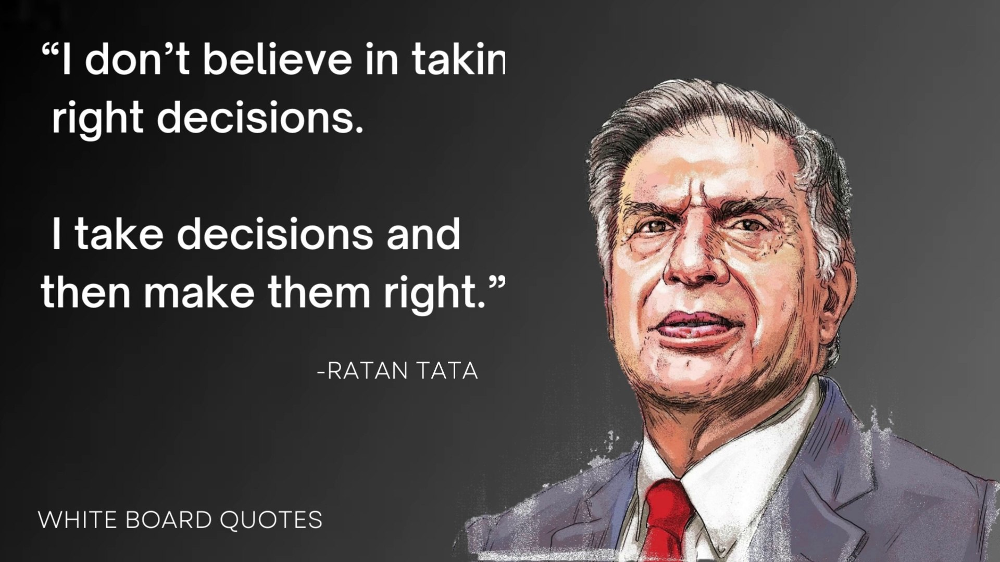

Ratan Tata
Born: 28 Dec 1937 (age 86 years)
Indian Businessman

Biography:
Ratan Naval Tata (born 28 December 1937) is an Indian industrialist, philanthropist and former chairman of Tata Sons. He was a chairman of the Tata Group from 1990 to 2012, and interim chairman from October 2016 through February 2017. He continues to head
its charitable trusts. In 2008, he received the Padma Vibhushan, the second highest civilian honour in India, after receiving the Padma Bhushan, the third highest civilian honour in 2000.
He is the son of Naval Tata, who was adopted by Ratanji Tata, son of Jamsetji Tata, the founder of the Tata Group. He graduated
from the Cornell University College of Architecture with a bachelor's degree in architecture. He joined Tata in 1961, where he
worked on the shop floor of Tata Steel. He later succeeded J. R. D. Tata as chairman of Tata Sons upon the latter's retirement in 1991. Under his tenure the Tata Group acquired Tetley, Jaguar Land Rover, and Corus, in an attempt to turn Tata from a largely India-centric group into a global business. Tata is also one of the largest philanthropists in the world, having donated around 60–65% of his income to charity.
Ratan Tata is also a prolific investor and has made numerous investments in several startups. Tata has invested in over 30 start-ups to date, most in a personal capacity and some via his investment company.